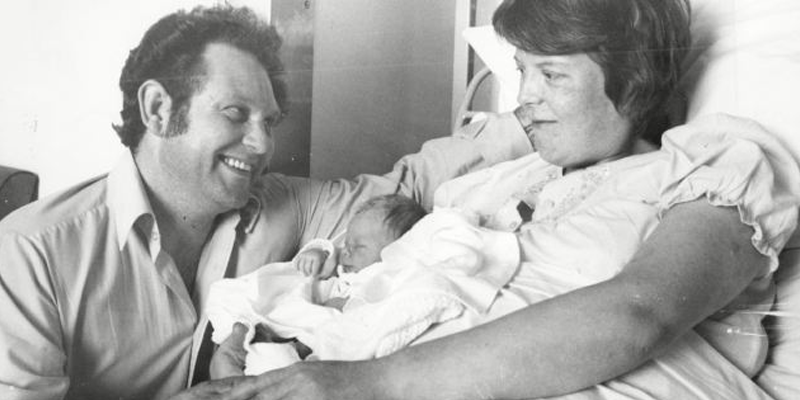
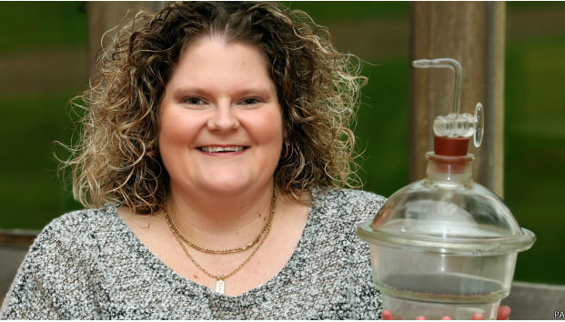
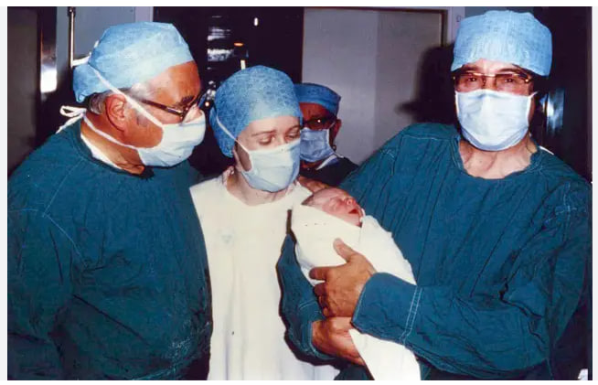
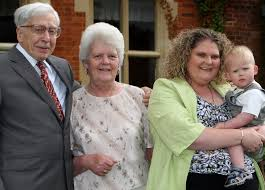

Main Page
Contact

Louise Brown, the first baby born by
In Vitro Fertilisation
and her parents, John & Lesley Brown

Louise Brown, the world's first test tube baby, holds the incubator jar in which embryo was incubated

Patrick Steptoe, Jean Purdy and Robert Edwards at the birth of Louise Brown
on 25 July 1978

Adult Louise with her son, her mom and Robert Edwards